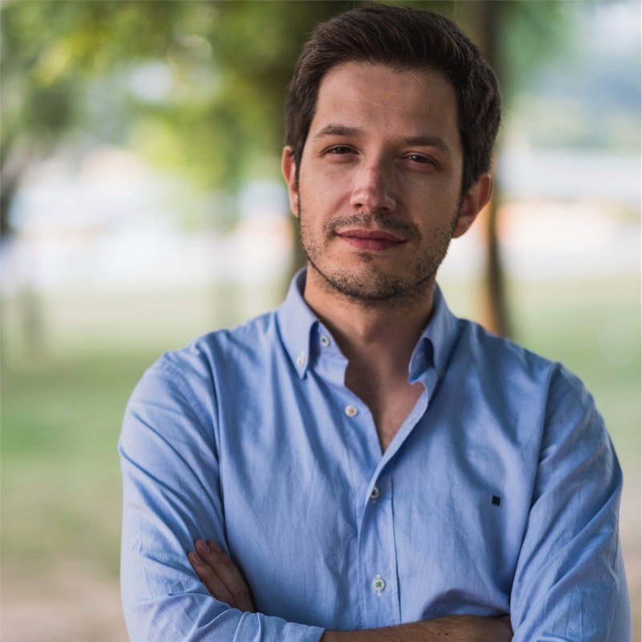
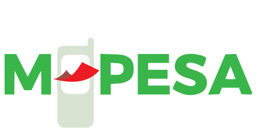
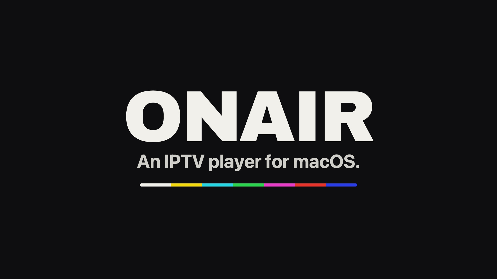
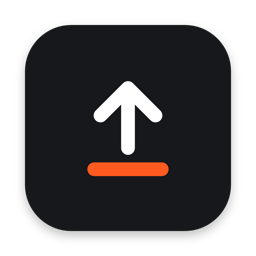
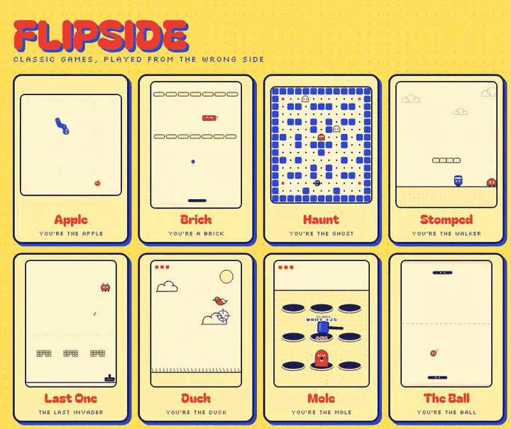
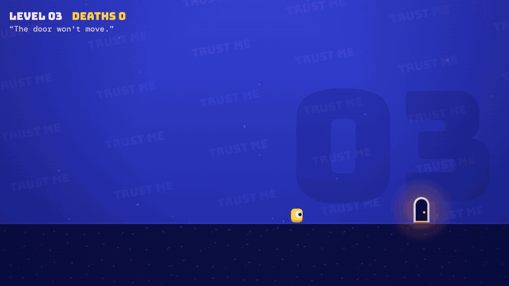

JorgeSousa
Great software is built by great teams. For 19 years I've helped build both.
I work where technology meets people and business. Great teams are built on trust, collaboration and continuous improvement.
I started in 2007 as a native iOS and backend developer, then grew into architecture and leadership: technical leader, solutions architect in London, project manager and Head of Unit, leading mobile and backend teams across telecom and fintech.
Today I'm an Engineering Lead at Mindera, working remotely with international teams. I'm from Arouca, one of the most beautiful places in the world, and I live in Coimbra.
Strong cultures
Teams that grow, decide and own what they ship.
Complex initiatives
Turning business challenges into digital solutions that work at scale.
Hands on the code
I still build. It's how I understand what I ask of my teams.
What I think
about.
- 01
Engineering leadership
From engineer to manager to leader of leaders. What changes at each step, and what should never change.
- 02
People & culture
Trust, feedback, psychological safety. Projects succeed or fail at the human level, not in the plan.
- 03
Teams in the AI era
When building gets cheap, judgement gets expensive. How teams, roles and craft are being rewritten.
- 04
Hands-on leaders
Why leaders who still build make better calls, and how to stay close to the details without taking over.
- 05
Remote & distributed teams
Leading across countries, time zones and clients without losing alignment or connection.
- 06
Tech meets business
Connecting engineering decisions to outcomes clients and companies actually care about.
Things I helped
ship.

M-Pesa
Vodafone
Unitel
Nineteen years,
three chapters.
Builder
- Software EngineeriOS & backend · Vodafone TV
- Technical LeaderMy Vodafone · V-Auto
Architect
- Solutions ArchitectVodafone · Secure Net
Leader
- Project Manager → Senior PMOneNet · multi-market delivery
- Head of UnitM-Pesa · Unitel · 60M+ users
- Engineering LeadMindera · now
Things I built
because I wanted to.
All of this was built at night, with AI agents as my pair programmers. It's how I stay hands-on, and how I learn first-hand what my teams are learning.
- Claude CodeAnthropic
- GitHub CopilotGitHub
- CodexOpenAI
tabs open.
Tab Rehab
↗A free Chrome extension for chronic tab hoarders. Close tabs without losing a thing, one at a time, with an undo for everything. Nothing leaves your laptop.

ONAIR
↗Just TV. An IPTV player for the Mac with no ads, no accounts and no tracking. Free and open source, built like it isn't.
data
.pt
apis-publicas-pt
↗Portugal's and the EU's public data, ready for AI agents: INE, IPMA, Banco de Portugal, Eurostat and more.

Unsit
↗Your chair can wait. A menu bar app that gets you to 10,000 steps and enough water during the workday.

Flipside
↗Classic games, played from the wrong side: you're the apple dodging the snake, the brick dodging the ball.

Level Liar
↗A not-so-honest platformer: the door runs away, the controls flip and the floor gives way.
Sousa Lab
Every project starts with a question from Francisco or Daniel, my sons. Instead of looking up the answer, we build something that shows it.
km
Half Marathon Readiness
↗Reads my Strava training and scores my half-marathon readiness from 0 to 100, with a predicted time and AI coaching.
- Dad of twoFrancisco and Daniel ask the best questions.
- Running & footballHow I clear my head.
- AroucaWhere I'm from. Where I go back.